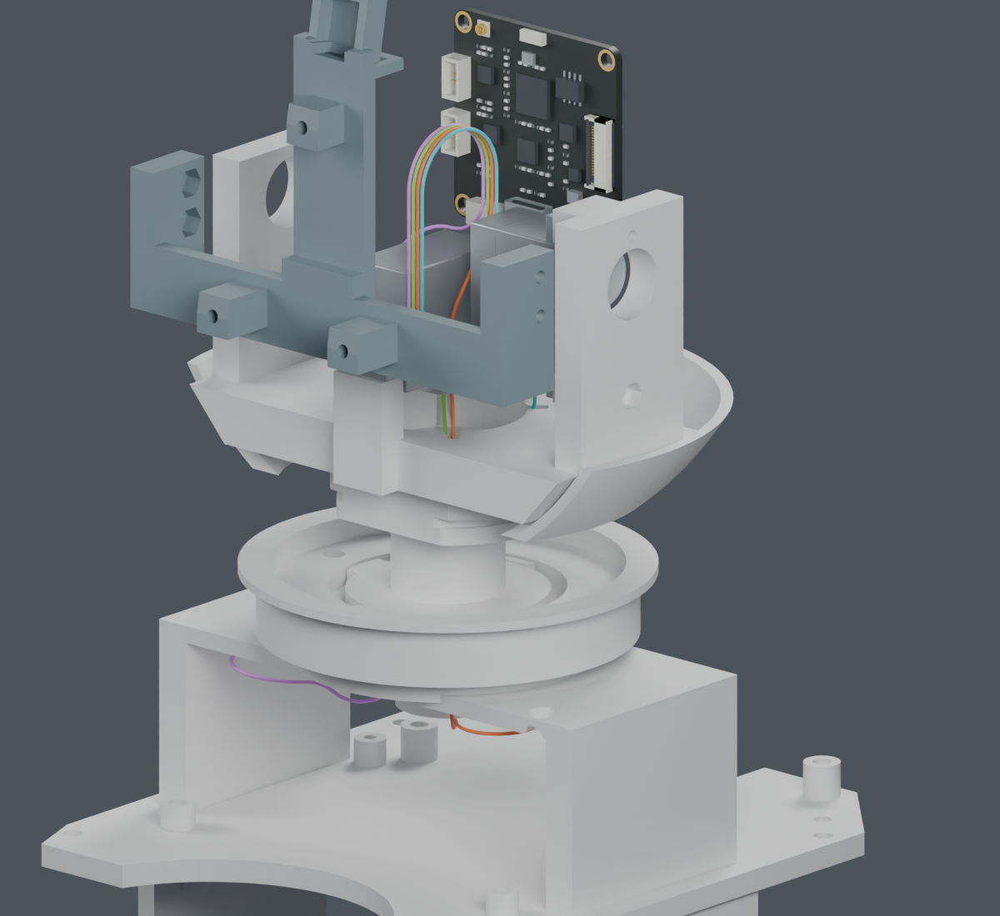

新增颈部到俯仰线环的过渡。四条名义路径共同通过本轮几何检查，解决了上次两段未连接的问题。
独立候选，主模型未改。实际固定、完整装配、其余头部线路和实物接口仍未完成；不能按本页长度加工。

从身体板端经过颈部和两轴活动区，接到条件性CAM插合分配。下方显示同一组路线在零位、低头和抬头时的形状；四色仅表示槽位。
| 已完成 | 结果 |
|---|---|
| 130组合姿态下的源实体及路线检查 | PASS，采用独立J3M打印件候选 |
| 四线共同排布 | PASS，54个过渡配对检查，81种可用组合 |
| 1560处路线接点 | PASS，最大数值误差小于0.000008mm |
| 名义线间隙 | CAM段下界0.306mm，过渡之间≥0.327mm；未计实物公差 |
| 整段半径/长度 | 解析界PASS；不代表连续碰撞或线材寿命通过 |
实际固定和应力释放、完整装入与拆修、其余七根头部导线与相机FPC、真实插合件和加工公差。位置固定仅是当前路径约束，自由导线未必按图弯曲。
供应商按图制作已确定。最新公开资料补查列出了具体已知和未知尺寸；目前不会把模型中心线直接作为下料长度。
完整说明 · Blender副本 · 四线独立重放 · 过渡数学界 · 线环数学界 · 接点复核 · 复现命令 · 来源清单